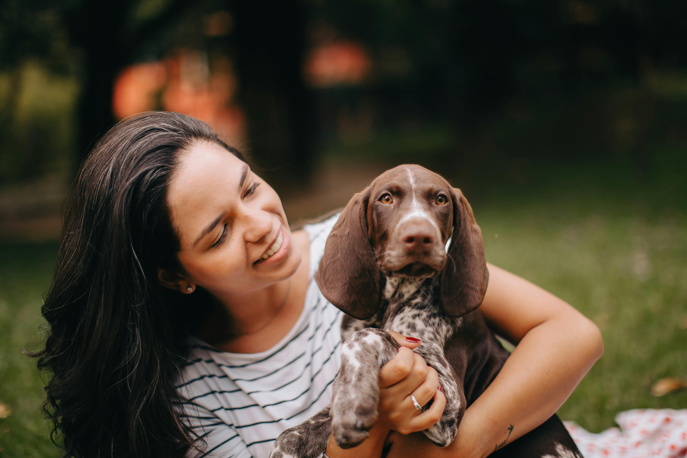
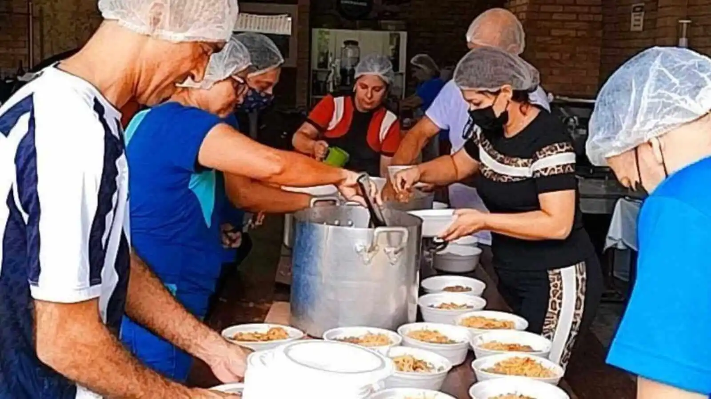

O desejo de unir pessoas, causas e propósitos deu origem ao JuntosSomos+Fortes, um espaço criado para conectar ONGs, voluntários e doadores, promovendo a colaboração e transformando boas intenções em ações concretas.
Mais do que um portal, somos uma comunidade movida por empatia, construída sobre o respeito e o desejo de fazer o bem juntos. Cada gesto aqui — seja uma doação, uma hora de trabalho ou uma nova parceria — é uma forma de fortalecer quem se dedica a mudar o mundo.
No JuntosSomos+Fortes, acreditamos que a união é o que transforma. Quando cada um faz a sua parte, todos ganham: pessoas, animais, comunidades e o planeta.
Conheça o projeto que conecta ONGs, voluntários e doadores em uma única rede de solidariedade.
Nas ruas, cada olhar carrega uma história — e nenhuma vida deveria enfrentar o abandono sozinha. Este projeto transforma solidão em cuidado, resgata cães e gatos, oferece abrigo, tratamento e a chance de reencontrarem o amor em um novo lar.
Causa: Educação e oportunidades para crianças e adolescentes
Acreditamos que o futuro começa com acesso à educação de qualidade. Este projeto oferece reforço escolar, oficinas criativas e cursos gratuitos para jovens de famílias com recursos limitados.
Causa: Combate à fome e apoio a pessoas em vulnerabilidade
De mãos dadas, levamos alimento e esperança a quem mais precisa. O projeto organiza mutirões de preparo de marmitas, arrecadação de alimentos e doações para orfanatos e abrigos.
Cada gesto faz a diferença. Conheça quem já viveu o impacto de nossas ações.
Eu encontrei a Mel em um abrigo da ONG, magrinha e assustada. Hoje ela é parte da família. Ver o amor que esses voluntários têm pelos animais é inspirador.

— Carla Menezes, adotante
Meu filho nunca tinha tido acesso a um computador. Depois do curso de informática do Instituto, ele já fala em ser programador. Isso não tem preço.
— Luciana Alves, mãe de aluno
A comida é o primeiro passo, mas o verdadeiro propósito é devolver dignidade. Cada entrega é uma mensagem de que ninguém está sozinho.

— Kellen Nogueira, coordenadora da Rede Solidária do Bem
Essas são apenas algumas das histórias que mostram o poder da união.